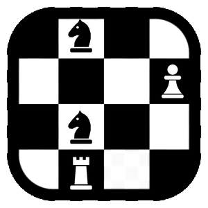

Pragma Chess
Features
Screenshots
Download
Supporters
Support
Blog
GitHub
English
Italiano
Blog
How Pragma Chess is made: the ideas, the choices and the details behind it.

October 10, 2026
The Pragma Chess logo, a P you read by playing
Four pieces on a corner of a board. Someone who does not play sees a board; a player sees the moves, and the moves draw a P.